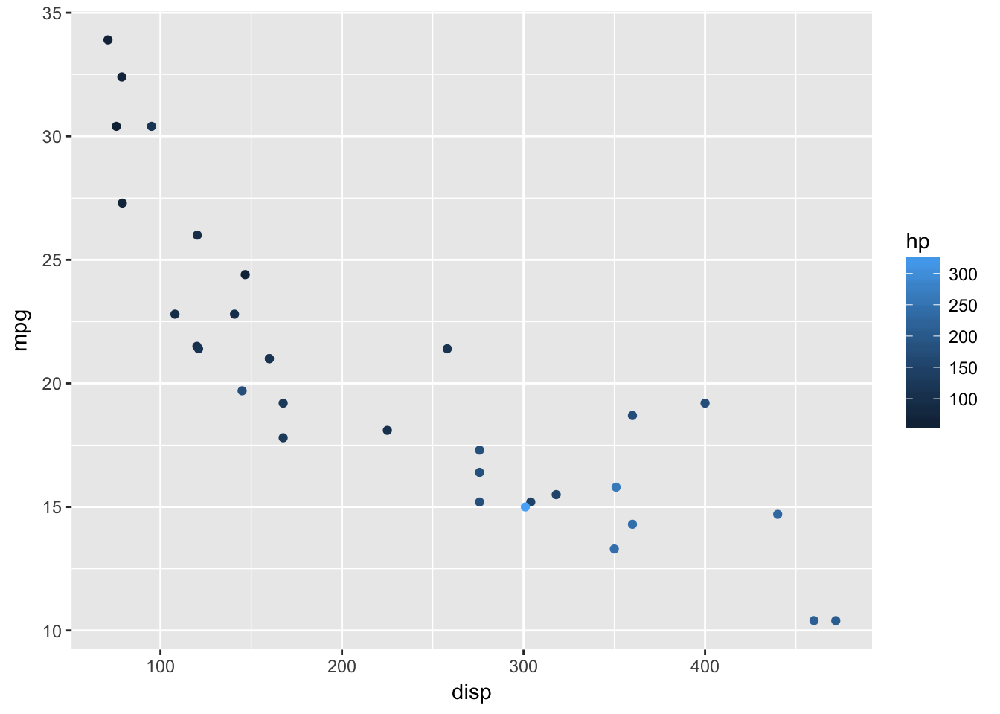
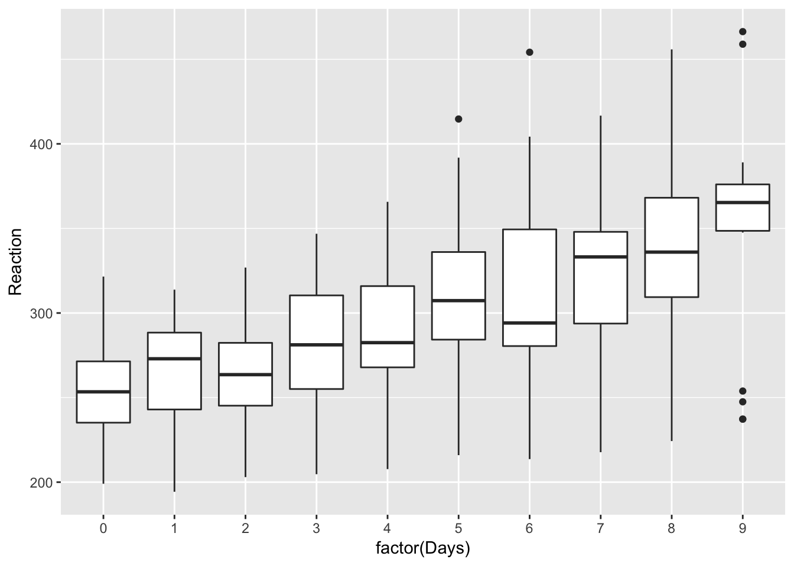
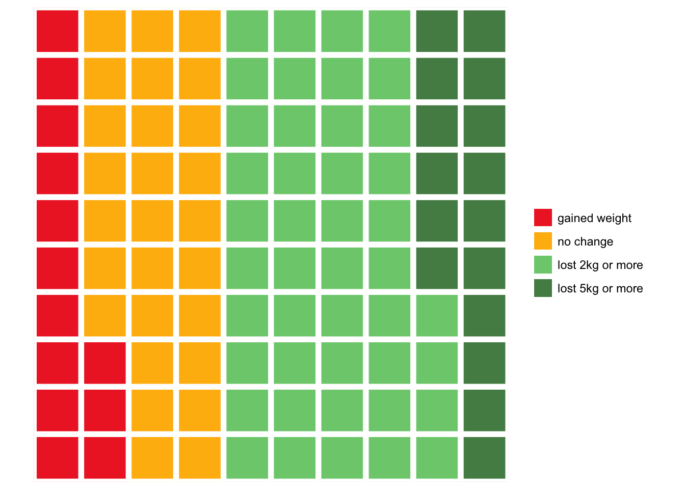

Layered graphics with ggplot
If you’ve never given much thought to data visualisation before, you might be surprised at the sheer variety of graphs types available.
One way to cut through the multitude of options is to determine what the purpose of your plot is. Although not a complete list, it’s likely your plot will show at least one of:
- Relationships
- Distributions
- Comparison
- Composition
The ggplot library makes it easy to produce high quality graphics which serve these ends, and to layer them to produce information-dense plots which are really effective forms of communication.
Figure 5.1: Examples of charts showing comaprisons, relationships, distribution and composition. The comparison, distribution and composition plots show 2 variables, but the relationship plot includes 3, increasing the density of the information displayed.
A thought on ‘chart chooser’ guides
There are various simple chart selection guides available online, of which these are quite nice examples:

However, guides which attempt to be comprehensive and show you a full range of plot types are perhaps not as useful as those which reflect our knowledge of which plots are the most effective forms of communication.
For example, almost all guides to plotting, and especially R textbooks, will show you how to plot a simple bar graph. But bar graphs have numerous disadvantages over other plots which can show the same information.
Specifically, they:
are low in information density (and so inefficient in use of space)
make comparisons between multiple data series very difficult (for example in interaction plots), and
perhaps most importantly, even when they include error bars, readers consistently misinterpret the quantitative information in bar graphs (specifically, when bar graphs are used to display estimates which contain error, readers assume points above the bar are less likely than points within the bar, even though this is typically not the case).
You should be guided in choosing plots not by mechanical rules based on the number or type of variables you want to display. Instead, you should be guided by the evidence from basic studies of human perception, and applied data on how different types of infromation displays are really used by readers.
This guide is restricted to examples likely to be useful and effective for experiemental and applied psychologists.
Thinking like ggplot
When using ggplot it helps to think of five separate steps to making a plot (2 are optional, but commonly used):
Choose the data you want to plot.
Map variables to axes or other features of the plot (e.g. sizes or colours).
(Optionally) use
ggplotfunctions to summarise your data before the plot is drawn (e.g. to calulate means and standard errors for point-range plots).Add visual display layers.
(Optionally) Split the plot up across multiple panels using groupings in the data.
You can then customise the plot labels and title, and tweak other presentation parameters, although this often isn’t necessary unless sending a graphic for publication. You can also export graphics in multiple high quality formats.
The simplest way to demonstrate these steps is with an example, and we begin with a plot showing the relationship betwen variables:
‘Relationships’
Problem to be solved: You want to check/show whether variables are related in a linear fashion, e.g. before running linear regression
Step 1: Select data to plot
Step 1 is to select our data. As is typical in R, ggplot works best with long-format data. In the examples below we will use the mtcars dataset for convenience, so our first line of code is to use the dplyr pipe symbol (operator) to send the mtcars dataset to the next line of code:
mtcars %>%
...Step 2: Map variables to axes, colours, and other features
Step 2 is to map the variables we want to axes or other features of the plot (e.g. the colours of points, or the linetypes used in line plots).
The specify these mappings we use the aes() function, which is slightly cryptic, but short for ‘aesthetics mapping’. Depending on the plot type you will specify different aesthetics, and they can also have different effects depending on the plot type, but you will commonly specify:
xthe variable to use as the x axisythe variable to use as the y axiscolour: the variable to use to colour points or lines
Here we tell ggplot to use disp (engine size) on the x axis, and mpg on the y axis. We also tell it to colour the points differently depending on the value of hp (engine horsepower).
At this point ggplot will create and label the axes and plot area, but doesn’t yet display any of our data. For this we need to add visual display layers (in the next step).
mtcars %>%
ggplot(aes(x = disp, y = mpg, colour=hp))
Other aesthetics
There are many other aesthetics which can be specified. Some of the most useful are:
yminandymax: for upper and lower bounds, e.g. on error barsgroup:which tells ggplot to group observations by some variable and, for example, plot a different line per-group)fill: likecolourbut for areas/shapesalphaandsize: control the size and opacity of visual features (useful for de-emphasising some features of a plot to make others stand out)
See the ggplot documentation for more details: http://ggplot2.tidyverse.org/reference/#section-aesthetics
Step 3
We skip step 3 for this example (asking ggplot to automatically make summaries of our data before plotting), but will cover it below - see the stat_summary() function.
Step 4: Display data
To display data, we have to add a visual layer to the plot. For example, let’s say we want to make a scatter plot, and so draw points for each row of data:
mtcars %>%
ggplot(aes(x = disp, y = mpg, colour=hp)) +
geom_point()
And we have a pretty slick graph: ggplot has now added points for each pair of disp and mpg values, and coloured them according to the value of hp (see choosing colours below).
Use the airquality dataset and create your own scatterplot and try to colour the points using the Month variable. Should Month be used as a factor or a numeric variable when colouring the points?
What’s even neater about ggplot though is how easy it is to layer different visualisations of the same data. These visual layers are called geom’s and the functions which add them are all prefixed with geom_, so geom_point() for scatter plots, or geom_line() for line plots, or geom_smooth() for a smoothed line plot. We can add this to the scatter plot like so:
mtcars %>%
ggplot(aes(x = disp, y = mpg, colour=hp)) +
geom_point(size=2) +
geom_smooth(se=F, colour="grey")
`geom_smooth()` using method = 'loess'
In the example above, I have also customised the smoothed line, making it grey to avoid over-intrusion into our perception of the points. Often less is more when plotting graphs: not everything can be emphasised at once, and it’s important to make decisions about what should be given visual priority.
Step 5: ‘Splitting up’ or repeating the plot.
Very often, you will have drawn plot and think things like I wonder what that would look like if I drew it for men and women separately?. In ggplot this is called facetting, and is easy to achieve, provided your data are in a long format.
Using the same mtcars example, let’s say we wanted separate panels for American vs. Foreign cars (information held in the am variable). We simply add the facet_wrap(), and specify the "am" variable:
mtcars %>%
ggplot(aes(x = disp, y = mpg, colour=hp)) +
geom_point(size=2) +
geom_smooth(se=F, colour="grey") +
facet_wrap("am")
`geom_smooth()` using method = 'loess'
One trick is to make sure factors are labelled nicely, because these labels appear on the final plot. Here the mutate() call relabels the factor which makes the plot easier to read:
mtcars %>%
mutate(american = factor(am, labels=c("American", "Foreign"))) %>%
ggplot(aes(x = disp, y = mpg, colour=hp)) +
geom_point(size=2) +
geom_smooth(se=F, colour="grey") +
facet_wrap("american")
`geom_smooth()` using method = 'loess'
‘Distributions’
lme4::sleepstudy %>%
ggplot(aes(Reaction)) + geom_density()
Imagine we wanted to compare distributions for individuals. Simply overlaying the lines is confusing:
lme4::sleepstudy %>%
ggplot(aes(Reaction, group=Subject)) + geom_density()
Facetting produces a nicer result:
lme4::sleepstudy %>%
ggplot(aes(Reaction)) + geom_density() + facet_wrap("Subject")
But we could present the same information more compactly, and with better facility to compare between subjects, if we use a bottleplot:
lme4::sleepstudy %>%
ggplot(aes(Subject, Reaction)) +
geom_violin() 
We might want to plot our Subjects in order of their mean RT:
mean.ranked.sleep <- lme4::sleepstudy %>%
group_by(Subject) %>%
# calculate mean RT
mutate(RTm = mean(Reaction)) %>%
# sort by mean RT
arrange(RTm, Days) %>%
ungroup() %>%
# create a rank score but conert to factor right away
mutate(SubjectRank = factor(dense_rank(RTm)))
mean.ranked.sleep %>%
ggplot(aes(SubjectRank, Reaction)) +
geom_violin() +
theme(aspect.ratio = .33) # change the aspect ratio to make long and wide
Or we might want to compare individuals against the combined distribution:
# duplicate all the data, assigning one-replication to a single subject, "All"
sleep.repeat <- bind_rows(lme4::sleepstudy,
lme4::sleepstudy %>% mutate(Subject="All"))
Warning in bind_rows_(x, .id): binding factor and character vector,
coercing into character vector
Warning in bind_rows_(x, .id): binding character and factor vector,
coercing into character vector
sleep.repeat %>%
mutate(all = Subject=="All") %>%
ggplot(aes(Subject, Reaction, color=all)) +
geom_violin() +
guides(colour=FALSE) + # turn off he legend because we don't really need it
theme(aspect.ratio = .25) # change the aspect ratio to make long and wide
Boxplots can also work well to show distributions, and have the advantage of showing the median explicitly:
mean.ranked.sleep %>%
ggplot(aes(SubjectRank, Reaction)) +
geom_boxplot() 
If we plot the same data by-day, we can clearly see the effect of sleep deprivation, and the increase in variability between subjects as sime goes on: the lack of sleeps seems to be affecting some subjects more than others
lme4::sleepstudy %>%
ggplot(aes(factor(Days), Reaction)) +
geom_boxplot() 
‘Comparisons’
Imagine we have rainfall and temperature data for various regions, across months:
DAAG::bomregions %>%
psych::describe(fast=T) %>%
pander| vars | n | mean | sd | min | max | range | se | |
|---|---|---|---|---|---|---|---|---|
| Year | 1 | 109 | 1954 | 31.61 | 1900 | 2008 | 108 | 3.028 |
| eastAVt | 2 | 99 | 20.43 | 0.4585 | 19.35 | 21.61 | 2.255 | 0.04608 |
| seAVt | 3 | 99 | 14.59 | 0.4547 | 13.62 | 15.94 | 2.32 | 0.0457 |
| southAVt | 4 | 99 | 18.48 | 0.4584 | 17.43 | 19.53 | 2.1 | 0.04607 |
| swAVt | 5 | 99 | 16.18 | 0.4734 | 15.08 | 17.05 | 1.97 | 0.04758 |
| westAVt | 6 | 99 | 22.33 | 0.4548 | 21.22 | 23.39 | 2.165 | 0.04571 |
| northAVt | 7 | 99 | 24.6 | 0.5042 | 23.57 | 25.94 | 2.365 | 0.05067 |
| mdbAVt | 8 | 99 | 17.59 | 0.4958 | 16.36 | 18.79 | 2.425 | 0.04983 |
| auAVt | 9 | 99 | 21.71 | 0.4429 | 20.67 | 22.87 | 2.195 | 0.04452 |
| eastRain | 10 | 109 | 601.6 | 123.8 | 315.3 | 1030 | 715 | 11.85 |
| seRain | 11 | 109 | 598.1 | 104.6 | 354.9 | 900.6 | 545.7 | 10.02 |
| southRain | 12 | 109 | 381.7 | 68.63 | 236 | 618.2 | 382.1 | 6.574 |
| swRain | 13 | 109 | 657.8 | 103 | 420.5 | 988.8 | 568.4 | 9.861 |
| westRain | 14 | 109 | 352.2 | 84.55 | 173.5 | 646.5 | 473 | 8.098 |
| northRain | 15 | 109 | 520.7 | 110.2 | 312.8 | 946.9 | 634 | 10.55 |
| mdbRain | 16 | 109 | 476 | 110.9 | 255.8 | 821 | 565.2 | 10.62 |
| auRain | 17 | 109 | 457.1 | 82.55 | 317.2 | 785.3 | 468.1 | 7.906 |
| SOI | 18 | 109 | -0.002676 | 6.845 | -20.01 | 20.79 | 40.8 | 0.6556 |
| co2mlo | 19 | 50 | 345.6 | 21.01 | 316 | 385.4 | 69.47 | 2.972 |
| co2law | 20 | 79 | 310.4 | 9.586 | 295.8 | 333.7 | 37.9 | 1.078 |
| CO2 | 21 | 109 | 324.3 | 24.59 | 296.3 | 385.4 | 89.19 | 2.355 |
| sunspot | 22 | 109 | 60.08 | 47.69 | 1.4 | 190.2 | 188.8 | 4.568 |
Because these data are in wide format (multiple columns have contain the same type of data) we need to first convert to long format. This process has become known as tidying.
The code below selects the columns related to rainfall and temperature and then ‘melts’ the data to long format: one row per observation. We then extract the region and the type of measurement from the variable column which is created by using a regular expression:
weather.data.long <- DAAG::bomregions %>%
select(Year, ends_with('Rain'), ends_with('AVt')) %>%
reshape2::melt(id.var="Year") %>%
extract(variable,
into=c("Region", "variable"),
regex="(east|north|se|south|west|sw|au)(\\w+)") %>%
filter(!is.na(variable))
weather.data.long %>% head
Year Region variable value
1 1900 east Rain 429.98
2 1901 east Rain 500.12
3 1902 east Rain 315.33
4 1903 east Rain 694.09
5 1904 east Rain 564.86
6 1905 east Rain 443.115.0.0.0.1
Try stepping through the code above line by line and see what is produced at each step.
With our data in long form we can use ggplot to plot our data over time. In the plot below, we use filter() to select only the rainfall measurements:
rain <-
weather.data.long %>%
filter(variable=='Rain')
rain %>%
ggplot(aes(Year, value)) +
geom_point() +
ylab('Rainfall (mm)')
There are many ways to extract structure from these data, and make comparisons over time. One is to use colour:
rain %>%
ggplot(aes(Year, value, color=Region)) +
geom_point() +
ylab('Rainfall (mm)')
It’s now easy to see the crude differences between the regions (west appears the driest, sw the wettest), but it’s still hard to compare between regions, or over time.
For this we can use various forms of summaries, for example a smoothed line plot (the shaded area is the standard error), which clearly shows the relative changes in rainfall in each region over time:
rain %>%
ggplot(aes(Year, value, color=Region)) +
geom_smooth() +
ylab('Rainfall (mm)')
`geom_smooth()` using method = 'loess'
It can sometimes be desireable to include points to preserve the relationship between the summary and the raw data:
rain %>%
filter(Region %in% c('west', 'se')) %>%
ggplot(aes(Year, value, color=Region)) +
geom_point(alpha=.5, size=.5) +
geom_smooth(se=F) +
ylab('Rainfall (mm)')
`geom_smooth()` using method = 'loess'
If we weren’t interested in the time series and just wanted to focus on the most recent year, we might take a different approach. Here a bar plot is used to compare between regions, with the national average (au) highlighted in blue:
rain %>%
filter(Year == max(Year)) %>%
ggplot(aes(Region, value, fill=Region=="au")) +
stat_summary(geom="bar") +
ylab('Rainfall (mm)') +
guides(fill=F)
No summary function supplied, defaulting to `mean_se()
Finally, we shouldn’t forget that this dataset included both rainfall and temperature data, and we can display these in different ways, depending on what our research question was.
In this case we can use facetting to display temperature and rainfall data side by side. Because AVt and Rain are on such different scales we need to allow the y axis to vary between variables:
weather.data.long %>%
ggplot(aes(Year, value, color=Region)) +
geom_smooth() +
facet_wrap(~variable, scales="free")
`geom_smooth()` using method = 'loess'
Warning: Removed 70 rows containing non-finite values (stat_smooth).
‘Composition’
Waffle plots or ‘pictograms’
Waffle plots are neat way of showing the relative frequency of different categories.
In applied settings it’s well known that when considering the risks or benefits of interventions clinicans, patients and researchers benefit from statements made using ‘natural frequencies’ [@gigerenzer2003simple], and pictographs or ‘waffle plots’ have been shown to provide patients and their families with a better understanding of the risks of treatments [@tait2010presenting].
Waffle plots can be implemented in R via the waffle:: package:
outcomes <- c("gained weight"=13,
"no change"=27,
"lost 2kg or more" = 44,
"lost 5kg or more" = 16)
waffle::waffle(outcomes)
Calculating these summary figures is left as an exercise to for the reader, but see the section on summarising data with dplyr.
This is one of those occasions where the default ggplot colours could probably be improved, and we can do this by passing the names of the colours we would like to use:
weight.loss.colours <- c('firebrick2', 'darkgoldenrod1', 'palegreen3', 'palegreen4')
waffle::waffle(outcomes, colors = weight.loss.colours)
Selecting colours by hand isn’t always the best way though: the colourbrewer library provides some nice shortcuts for using palletes from the excellent ColourBrewer website.
Stacked bars
The reshape2 package includes data on tipping habits in restaurants for male and female bill-payers, and where the party was fo various sizes:
reshape2::tips %>%
head %>%
pander| total_bill | tip | sex | smoker | day | time | size |
|---|---|---|---|---|---|---|
| 16.99 | 1.01 | Female | No | Sun | Dinner | 2 |
| 10.34 | 1.66 | Male | No | Sun | Dinner | 3 |
| 21.01 | 3.5 | Male | No | Sun | Dinner | 3 |
| 23.68 | 3.31 | Male | No | Sun | Dinner | 2 |
| 24.59 | 3.61 | Female | No | Sun | Dinner | 4 |
| 25.29 | 4.71 | Male | No | Sun | Dinner | 4 |
To begin, we might like to plot tips by time of day:
reshape2::tips %>%
ggplot(aes(time, tip)) +
stat_summary(geom="bar")
No summary function supplied, defaulting to `mean_se()
And to facilitate the comparison between men and women we could colour portions of the bars using position_stack():
reshape2::tips %>%
ggplot(aes(time, tip, fill=sex)) +
stat_summary(geom="bar", position=position_stack()) +
xlab("") + ylab("Tip ($)")
No summary function supplied, defaulting to `mean_se()
Or to reverse the comparisons:
reshape2::tips %>%
ggplot(aes(sex, tip, fill=time)) +
stat_summary(geom="bar", position=position_stack()) +
xlab("") + ylab("Tip ($)")
No summary function supplied, defaulting to `mean_se()